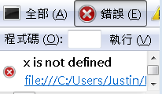

|
|
在JavaScript中，有基本（Primitive）資料型態、複合（Composite）資料型態，還有兩個特殊的值null與undefined。 基本資料型態包括了數值、字串與布林值，型態名稱分別為number、string與布林值boolean。 在JavaScript中，沒有整數與浮點數的區別，數值都是 IEEE 754標準64位元浮點數，可表示的數字最小值為Number.MIN_VALUE（5e-324），而最大值為Number.MAX_VALUE（1.7976931348623157e+308）。根據 ECMA Section 8.5 - Numbers，最大整數應為253，不過注意位元運算子的結果會是32位元有號整數，像是~、>>等。 與其它程式語言相同，撰寫數值時要使用數值實字（Number literal），預設是十進位整數，也可以用0開頭表示八進位整數，或是用0x開頭表示十六進位整數。例如： 10（十進位）
0677（八進位） 0xFF（十六進位） 若要表示浮點數，則可使用科學記號表示。例如： 3.14
5.231E13（5.231 * 1013） 1.31E-32（1.31 * 10-32） 數值有幾個特殊值，例如+Infinity（或簡單寫為Infinity）表示正無限大，-Infinity表示負無限大。也可以使用Number.POSITIVE_INFINITY取得正無限大，Number.NEGATIVE_INFINITY取得負無限大。另外還有NaN或Number.NaN表非數值（Not a Number），例如你嘗試作 1 / 'two'時，就會出現NaN的結果。注意，NaN不等於任何值，NaN也不等於NaN，如果你要測試某值結果是否為NaN，則要用isNaN()函式來測試。例如：
在JavaScript中，字串是基本資料型態，可使用單引號或雙引號來包括一串文字，用以表示字串。例如： var str1 = 'text1';
var str2 = "text2"; JavaScript中沒有字元，若想表示某個字元，則以單引號或雙引號來包括單一字元，但仍是字串型態。例如：
typeof可以用來測試某資料的型態，會傳回型態的字串描述，例如，對數值使用typeof會傳回'number'。上例中，ch1與ch2參考的型態都是'string'。在撰寫字串實字（String literal）時可使用單引號或雙引號，一般習慣在JavaScript程式中採用單引號，而將雙引號保留給HTML使用，避免跳脫文字的麻煩。例如： var html = '<input type="text" value="defalut">';
布林值只有兩個值，true與false，分別表示真與假，對布林值使用typeof，結果會是'boolean'。 複合資料型態就是指物件（object），基本上它們都是Object的實例，使用typeof測試複合資料型態的結果就是'object'。例如：
null是JavaScript中特殊的值，表示沒有任何東西。應用的時機就是在變數不參考至任何物件時，可以指定變數為null，或測試變數是否參考至null：
如果你想知道某個物件是誰的實例，可以使用instanceof來測試。例如：
對null使用typeof的結果會是'object'，這很怪（只能強記），因為用instanceof測試null是否為Object的實例，結果卻是false：
注意！以下的x值有參考至一個值，那就是null，而不是undefined： var x = null;
以下的x才是undefined： var x;
undefined是JavaScript中特殊的值，當你試圖取得某個沒指定任何值的變數（也沒指定null）或特性（Properties）時，就會出現undefined的結果。對undefined使用typeof的結果是'undefined'。注意，在Rhino Shell中，undefined不會顯示任何結果。 注意，別與直譯錯誤時出現的「未定義」訊息搞錯了，例如，以下會直譯錯誤：
如果在Firefox中，錯誤主控台會出現以下結果：  如果是以下的程式，是可以正確執行的程式碼，x與y的結果都是undefined： var x;
var y = x; undefined本身等於undefined：
|